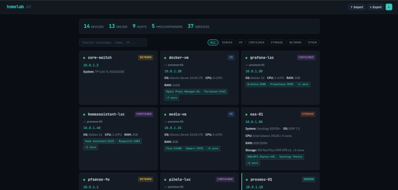

Offline Homelab Docs

If you've run a homelab for any length of time, you've probably had the same thought I have: "I should really write this down." You spin up a Proxmox host, throw a few LXCs on it, add a NAS, layer in some VMs, expose a handful of services, and a year later you can't remember which container is running what or which port maps to which app. The fix is documentation. The reason no one does it is that documentation tools tend to be heavier than the thing being documented.
homelab.md takes the opposite approach. It's a single HTML file. You drop it in a folder, double-click it, and you've got a clean interface for cataloging every device in your lab. No server, no Docker container, no database, no internet connection required.
The whole app is one file
That isn't a marketing line, it's literally how the project is built. There's no backend, no API, no build step, no node_modules directory waiting to bit-rot. You open index.html in a browser and you have a fully functional homelab dashboard with full CRUD, search, filtering, and stats. Your edits live in localStorage while you work, and the source of truth is a homelab.md Markdown file that you export and re-import as needed.
That last part is what makes it actually usable long term. The Markdown file is human-readable, version-controllable, and edit-able in any text editor. Each device is an h1 section, services and storage are Markdown tables, and parent-child relationships (LXCs on a Proxmox host, VMs on a NAS, that kind of thing) are preserved through IDs in the footer of each section. If you want a Git repo of your homelab history, you can just commit the file. If you want to make a quick edit on a flight, open it in any editor and re-import when you land.
What you can actually catalog
The data model is shaped around what people actually run, not an abstract idea of infrastructure:
- Servers, virtual machines, LXC containers, network gear, dedicated storage, and a catch-all "other" for things like UPS units and KVMs
- Per-device specs (system, OS, CPU, RAM, IPs, MAC, etc.)
- Parent-child links so a Proxmox host can show the LXCs and VMs running on it
- Multiple services per device, each with name, port, notes, and a clickable URL
- Multiple drives per device, each with type, size, and notes
- Free-form notes wherever you need them
You can filter by device type or run a search across hostnames, IPs, services, and notes. There's a small stats panel up top with at-a-glance counts: total devices, online status, hosts, VMs and LXCs, total services. It's the right amount of detail for a personal lab. Not a CMDB, not an asset database, just enough to actually be useful.
The export options are where it gets interesting
There are three export modes and they each solve a different problem.
The first is homelab.md Full, which is your real source of truth. Every detail, every IP, every port, every URL. This is the file you keep private.
The second is homelab.md Public, which produces a sanitized Markdown file suitable for sharing. IPs and MAC addresses are stripped out, every URL gets replaced, ports are dropped, and internal IDs and timestamps are removed. What's left is the hardware and software story of the lab without anything that could expose your network. It's perfect for, say, a Markdown-rendered page on a personal site.
The third, and the one I want to spend a moment on, is homelab.html Public. This export builds a single, self-contained HTML file that mirrors the look and feel of the live app, but in read-only form. Same theme, same search, same filters, same device detail modals. No add or edit controls, and the same sanitization applied to the public Markdown export. You can drop it on any static host and you've got a live, interactive dashboard of your homelab that won't leak your internal network.
I used that last feature to publish my own homelab specs at jereme.dev/homelab It's the public HTML export, dropped onto my site, no extra work. The page is searchable, filterable, and looks the same as the editor I use locally, just without anything I'd rather not advertise. That's a workflow I've wanted forever and never quite gotten to with other documentation tools, because they always assumed I wanted to maintain "the public version" as a separate artifact. With homelab.md, the private file is the only thing I maintain. The public version is one click and a file upload.
The shape of the workflow
The intended loop is small and stays out of your way: import your homelab.md if the file is newer than the browser session, make changes, export to write them back, optionally commit to Git. When you want to share, run one of the public exports and publish it.
There's no auto-sync, no cloud, no account to create. The file is the file. Your browser is the editor. That's the whole thing.
Who this is for
If you keep your homelab documentation in a Notion page, a Google Doc, a wiki you spun up and never updated, or worst of all, in your head, this is worth a look. It works offline by design, it leaves no trail beyond a Markdown file you fully control, and it gives you a believable path from "I should document this" to "here's a public dashboard of my lab" without any infrastructure in between.
It's also genuinely small. One HTML file. You can read the source, audit the sanitization, or fork it without a build environment. That kind of thing is rare enough now that it feels worth pointing out.
Links
- Project on GitHub: jeremehancock/homelab.md
- Live example using the public HTML export: jereme.dev/homelab
AI Assistance Disclosure
This tool was developed with assistance from AI language models.